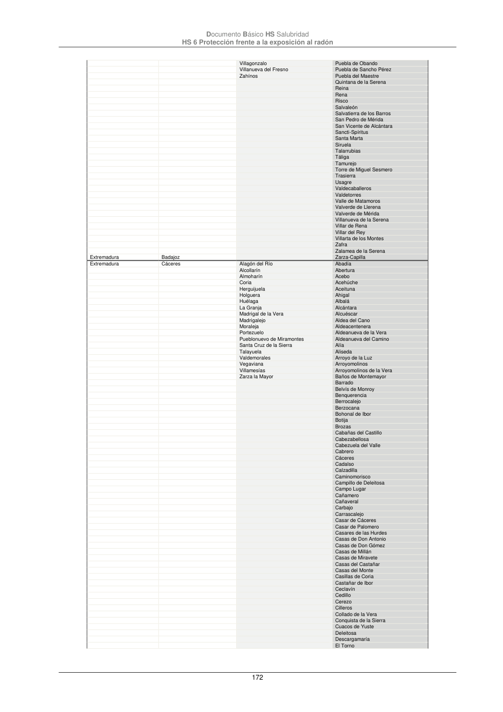

DB-HS Salubridad · edición 2022-06-14 · capa oficial
Documento DB-HS-oficial · SHA-256 del PDF 68df3caacc95f71aee2ec1ba7b2c65ae66155c21e3a8785521b8fdd4fd640d3b
Página física 172 de 184.
Copia fiel del PDF fuente · Fuente oficial
Ficha de la disposición en la fuente oficial
Formato: Texto de la página (Markdown)
Documento Básico HS Salubridad HS 6 Protección frente a la exposición al radón 172 Villagonzalo Puebla de Obando Villanueva del Fresno Puebla de Sancho Pérez Zahínos Puebla del Maestre Quintana de la Serena Reina Rena Risco Salvaleón Salvatierra de los Barros San Pedro de Mérida San Vicente de Alcántara Sancti-Spíritus Santa Marta Siruela Talarrubias Táliga Tamurejo Torre de Miguel Sesmero Trasierra Usagre Valdecaballeros Valdetorres Valle de Matamoros Valverde de Llerena Valverde de Mérida Villanueva de la Serena Villar de Rena Villar del Rey Villarta de los Montes Zafra Zalamea de la Serena Extremadura Badajoz Zarza-Capilla Extremadura Cáceres Alagón del Río Abadía Alcollarín Abertura Almoharín Acebo Coria Acehúche Herguijuela Aceituna Holguera Ahigal Huélaga Albalá La Granja Alcántara Madrigal de la Vera Alcuéscar Madrigalejo Aldea del Cano Moraleja Aldeacentenera Portezuelo Aldeanueva de la Vera Pueblonuevo de Miramontes Aldeanueva del Camino Santa Cruz de la Sierra Alía Talayuela Aliseda Valdemorales Arroyo de la Luz Vegaviana Arroyomolinos Villamesías Arroyomolinos de la Vera Zarza la Mayor Baños de Montemayor Barrado Belvís de Monroy Benquerencia Berrocalejo Berzocana Bohonal de Ibor Botija Brozas Cabañas del Castillo Cabezabellosa Cabezuela del Valle Cabrero Cáceres Cadalso Calzadilla Caminomorisco Campillo de Deleitosa Campo Lugar Cañamero Cañaveral Carbajo Carrascalejo Casar de Cáceres Casar de Palomero Casares de las Hurdes Casas de Don Antonio Casas de Don Gómez Casas de Millán Casas de Miravete Casas del Castañar Casas del Monte Casillas de Coria Castañar de Ibor Ceclavín Cedillo Cerezo Cilleros Collado de la Vera Conquista de la Sierra Cuacos de Yuste Deleitosa Descargamaría El Torno

Datos candidatos: compruebe celdas y notas en el PDF.